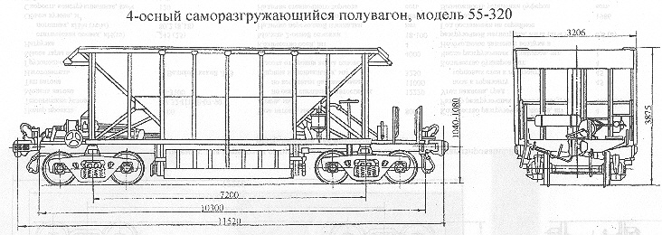

Назначение: для перевозки к механизированной разгрузке химически неактивных сыпучих и кусковых грузов размеров не более 100мм
Параметры
| для модели 55-320 | для модели 55-320-01 | |
| Номер проекта | 320 | 320 |
| Технические условия | ТУ 32-ЦТВР-15-91 | ТУ 32-ЦТВР-15-91 |
| Модель вагона | 55-320 | 55-320-01 |
| Тип вагона | ||
| Изготовитель | Великолукский ЛРЗ | Великолукский ЛРЗ |
| Грузоподъемность, т | 72 | 72 |
| Масса тары вагона, т | 21 | 21 |
| Нагрузка: статическая осевая, кН(тс) |
230(23,5) | 230(23,5) |
| погонная, кН/м(тс/м) | 80(8,16) | 80(8,16) |
| Объем кузова, м³ | 45 | 41 |
| Скорость конструкционная, км/ч | 120 | 120 |
| Габарит | 1-Т | 1-Т |
| База вагона, мм | 7200 | 7200 |
| Длина, мм: по осям сцепления автосцепок |
11520 | 11520 |
| по концевым балкам рамы | 10300 | 10300 |
| Ширина максимальная, мм | 3206 | 3206 |
| Высота от уровня верха головок рельсов максимальная, мм | 3875 | 3730 |
| Количество осей, шт. | 4 | 4 |
| Модель 2-осной тележки | 18-100 | 18-100 |
| Наличие переходной площадки | есть | есть |
| Наличие стояночного тормоза | есть | есть |
| Количество разгрузочных люков, шт. | 2 | 2 |
| Размер разгрузочного люка в свету, мм | 2600х350 | 2600х500 |
| Угол наклона, град. : пола бункеров |
45 | 45 |
| торцовых стен к горизонту | 45 | 45 |
| Количество бункеров, шт. | 1 | 1 |
| Число разгрузочных цилиндров, шт. | 1 | 1 |
| Необходимое давление воздуха в разгрузочной магистрали, МПа(атм.) | 0,6(6) | 0,6(6) |
| Год постановки на серийное производство | 1992 | 1992 |
| Возможность установки буфера | нет | нет |
| Наличие ручного открытия крышек разгрузочных люков | есть | нет |